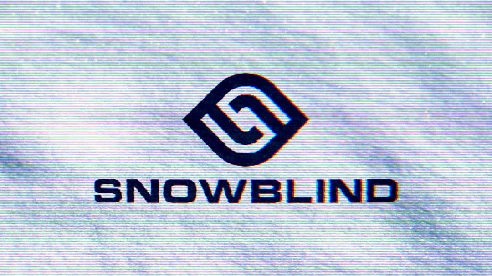
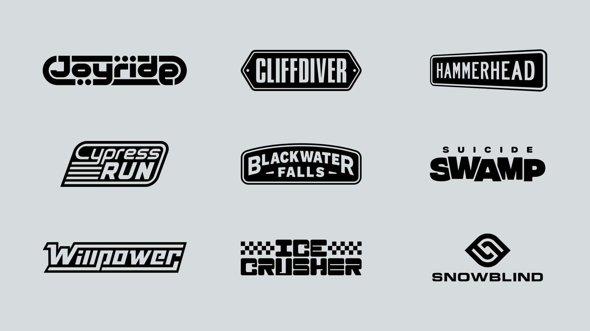
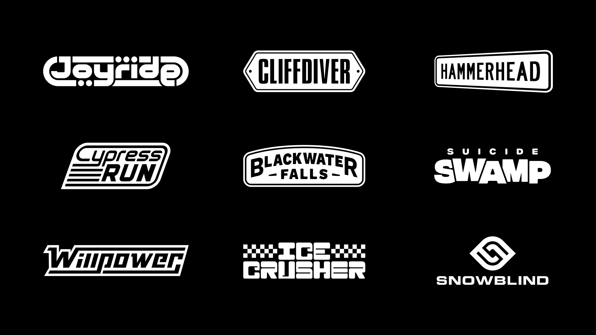
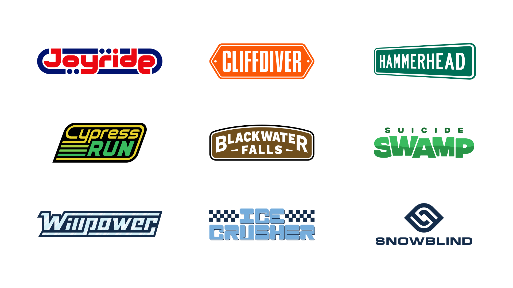

← Return to Homepage — Jet Moto Level Logos

Jet Moto Inspired Level Logos
Some of my favorite graphic design work exists inside of PlayStation 1 racing games. (Wip3out and Ridge Racer Type 4, specifically.) I'm a huge fan of the console and I'm constantly poking around the PS1 library to find games I overlooked. Jet Moto, a hoverbike racing game, is a recent discovery.
The game has 10 tracks, so I thought it'd be a fun challenge to create a logo for each of them. Here's what I came up with.







Links
References
01. Jet Moto ↗
02. Wip3out ↗
03. Ridge Racer Type 4 ↗
Project Details
Created in January 2022.
This is a fan project and is not associated with the Jet Moto brand, SingleTrac, or Sony Computer Entertainment. (Love u guys.)